Chapter Seven
Becoming More Familiar with the Language
page 7181. The only way to become skilful at any activity, whether it is physical or intellectual, is to practise it frequently. Professional tennis or football players, artists, musicians, writers and, in fact, all who wish to specialise in any way must devote many hours every day to their particular occupation. Even though we may not intend to become professional mathematicians we will need some practice at these new ideas if we are going to understand them reasonably well. This chapter is designed to give you that opportunity.
It is different from the others in that it consists almost entirely of exercises. We have seen that a logical situation can be expressed in at least three different ways:
- As a statement in words.
- As a statement in algebraic symbols.
- As a shaded diagram.
In the exercises on the following pages you are sometimes given two of these ways, sometimes only one. You should copy the example as it is given, and then supply the others. In other words, your answer will be (a pattern of shading), or (Algebra), or (a verbal statement).
When you have to supply a verbal statement you should think it out very carefully. If you find this difficult you should consult Section 75, where words have been matched to diagrams and Algebra. Do not use those phrases. Invent others like them.
Exercises
R.81. page 72 Copy Figs. 46, 47, and 48. Each should be completed by supplying the missing parts. Your copies (unless otherwise stated) should have [1] a verbal statement, [2] algebra, [3] a shaded diagram for every example.
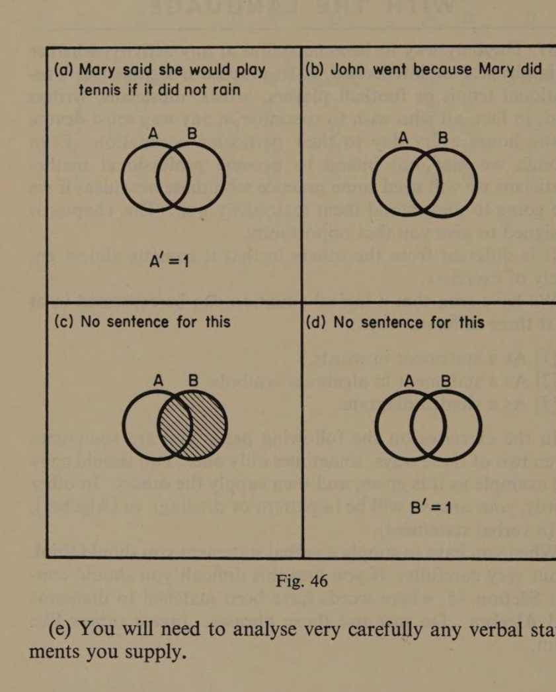
(e) You will need to analyse very carefully any verbal statements you supply.
page 73 R.81 (continued). Complete as before.
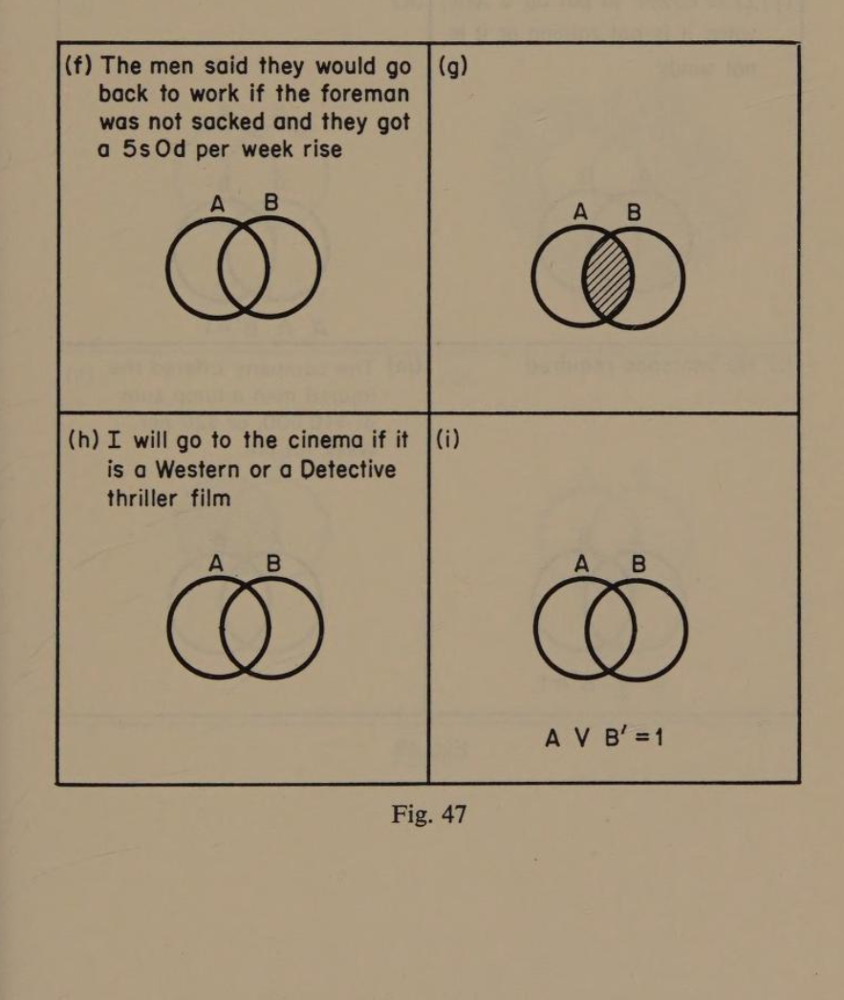
page 74 R.81 (continued). Complete these in the same way.
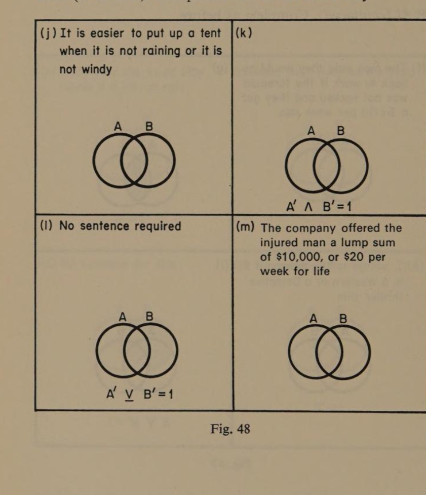
R.82. page 75 In the sixteen exercises on the next four pages, no sentences have to be translated or invented. All you have to do is to provide a diagram to fit the Algebra, or the Algebra to match the diagram.
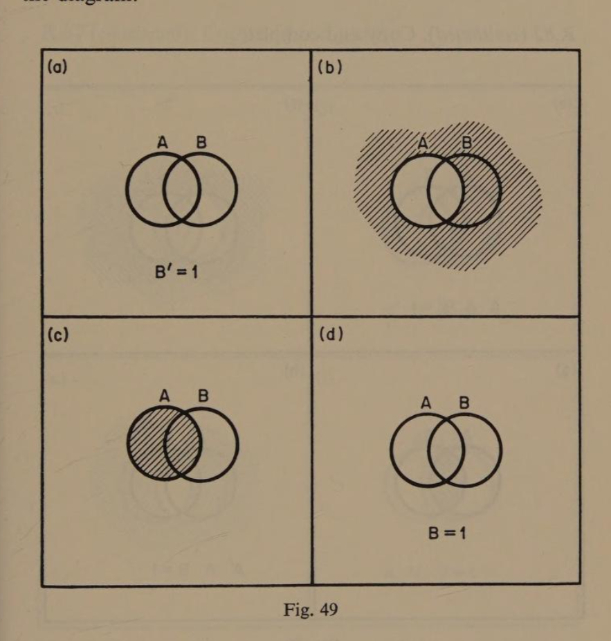
page 76 R.82 (continued). Copy and complete.
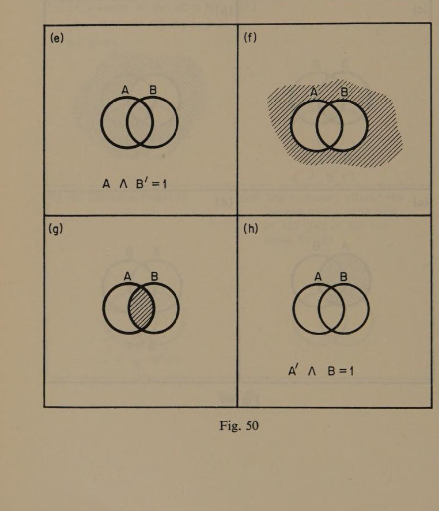
page 77 R.82 (continued). Copy and complete.
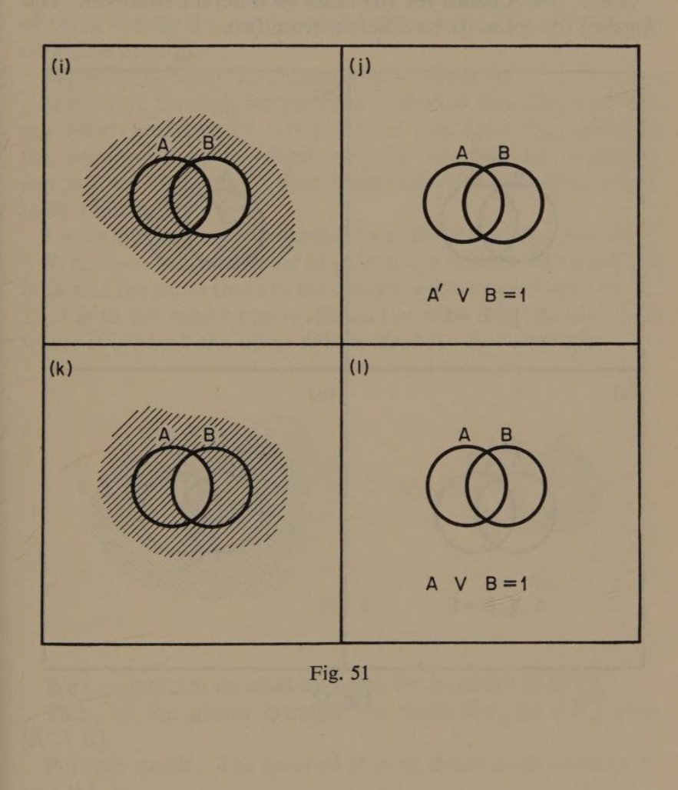
page 78 R.82 (continued). Copy and complete.
Note: The Algebra for (n) must be different from (o). The Algebra for (p) must be different from (m).
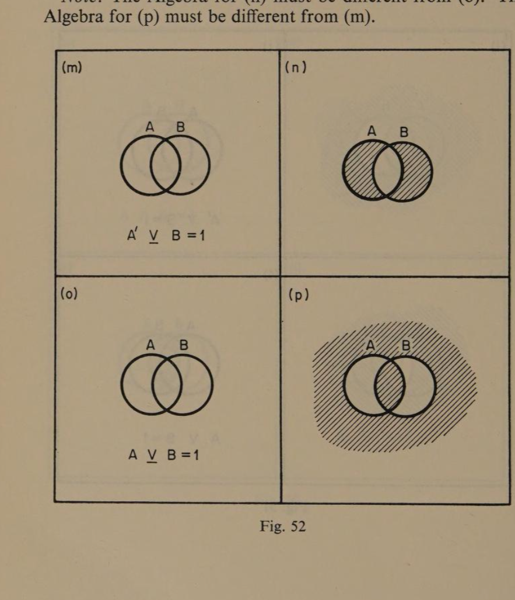
Have your answers checked before going to the next exercise.
83. page 79 If you have not checked your solutions to the last sixteen exercises, you should do so before proceeding to this section.
In the study of Mathematics it is often very instructive to look for patterns in the results we obtain as they can sometimes provide us with a clue to a deeper understanding of the subject. We will discuss this point at greater length later on, but for the time being I want you to think of two concepts. One is the idea of being exactly the same, and the other is the idea of being the complete opposite.
We will call them ‘Equivalence’ and ‘Reversal’. If we look through the patterns of shaded diagrams and find any which are exactly alike, then, if they are a true model of the situation they represent we may say that the algebraic expressions which match them must mean the same even if they look different.
Let us agree to use this symbol to indicate equivalence ↔. When we examine the set of patterns in Section 82 we should look also for those that are the complete reversals of each other. That is to say, where one is shaded the other will be blank, and where it is blank the other will be shaded. For example:
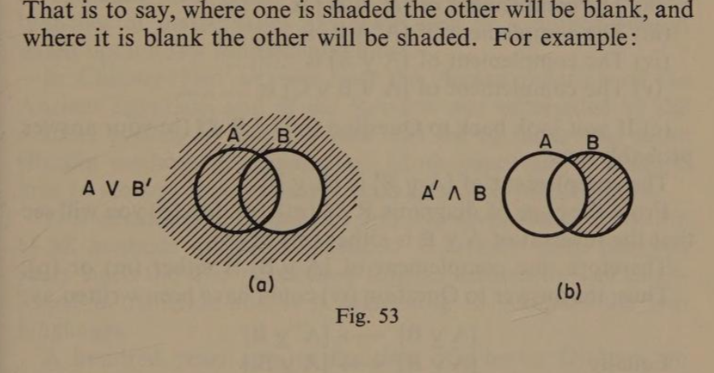
We can indicate reversal by using the negative dash (′). Thus, in the above example we could say: [A ∨ B′]′ ↔ [A′ ∧ B]. Put into words: ‘The reversal of A or B-not is the same as A′ and B.’ You will need to refer to your answers to Section 82 when dealing with these questions.
R.83. (a) The letters refer to the diagrams in R.82.
- Is (e) the reversal of (d)?
- Is (a) the reversal of (b)?page 80
- How do you recognise the opposite of a given pattern?
- Is (b) the reversal of (c)?
- Are any two diagrams alike in Figs. 49, 50, 51?
- Are any alike in Fig. 52?
- Complete this statement (m) is the same as ……
- Complete this statement (l) is the same as ……
- Complete this: A′ ∨ B ↔ ……
- Make a similar statement regarding two other expressions.
(b) The reversal of an expression produces a pattern in which the shaded and unshaded parts are reversed. This is called the complement. The complement of a given expression can be written by enclosing it in brackets and putting a negative (′) outside them. It can also be written as a quite different expression. Use brackets and negative dashes (′) for these:
- The complement of B is ……
- The complement of [A′ ∨ B] is ……
- The complement of [A ∧ B] is ……
- The complement of [A ∨ B] is ……
- The complement of [A ∨ B ∨ C] is ……
(c) If you look back to Question (iv) of R.83 (b) your answer probably was: The complement of [A ∨ B′] is [A ∨ B]′. From the page of diagrams R.82 (m), (n), (o), (p) you will see that the reversal of A ∨ B is either (m) or (p). Therefore, the complement of [A ∨ B′] is either (m) or (p). Thus, the answer to Question (iv) could have been written as:
[A ∨ B′]′ ↔ [A ∨ B]
Equally [A ∨ B′]′ ↔ [A′ ∨ B]
Study this result and then complete this statement: The reversal of two conditions linked by ∨ can be written by changing the sign of ……
(d) Give two forms of [A′ ∨ B′].
(e) Give two forms of [A′ ∨ B].
(f) Does the rule we discovered hold in both cases?
(g) Find the following reversals among your diagrams in Fig. 49 and complete these statements,
(i) [A]′ ↔ …… (ii) [B′]′ ↔ ……
(iii) [A′]′ ↔ …… (iv) [B]′ ↔ ……
page 81 (h) Study your diagrams (e), (f), (g), (h), (i), (j), (k), (l) in Figs. 50 and 51 carefully when finding these reversals.
(i) [A ⊻ B]′ ↔ …… (ii) [A ⊻ B′]′ ↔ ……
(iii) [A ⊻ B]′ ↔ …… (iv) [A′ ⊻ B′]′ ↔ ……
(i) Complete this: ‘The reversal of two conditions linked by ⊻ changes it to …… and changes the …… of ……’
(j) Is this statement necessarily true: ‘The reversal of two conditions linked by ⊻ changes its sign and the operator to ∨.’?
84. In Chapters Three and Four we described Mathematics as a language. We saw, too, how over a long period of time it gradually developed from simple counting into the complex structure of knowledge it is today. Along with this growth of the subject there has been at the same time a continuous trend towards simplification in methods of writing the symbols and of operating with them. Today, more than ever, the various branches of mathematics are being seen as a unified subject based upon a few fundamental ideas.
In Chapter Two we saw how the clumsy notation of the Ancient Egyptians and of the Romans was superseded by the number system we use and how this led to faster and more efficient methods of calculation. More important, it enabled men to see and express complicated ideas and relationships. This streamlining of thought and its expression is a feature of all methods of communication. It is over three hundred years since the first permanent English settlement was established in America and it is interesting to compare the two languages.
A hundred years ago, in the time of Charles Dickens, an employee might have said, ‘Forgive my boldness, Sir, but I would esteem it a great favour if you would kindly consider increasing the emoluments you grant me for my humble services.’ No one today would dream of using such language. He might say, ‘Sir, I wish to apply for a rise in salary.’ In the United States the language would be even more direct. ‘Mr Dash, I’d like to talk to you about a raise.’
85. There are many examples of this trend towards simplification in the Mathematics we do. For instance, the symbols we use to mean twenty-five are 25. Strictly speaking, this is 20 + 5.page 82 In Numerical Algebra, when we write two letters next to each other, we indicate a product not a sum. Thus, ab means a multiplied by b. When we are symbolising Geometry, AB usually indicates a line segment, so that we would refer to this line Fig. 54(a)
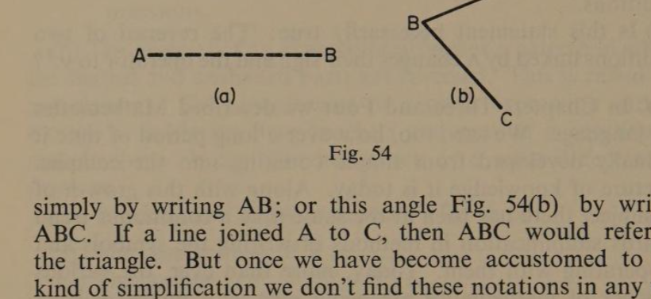
simply by writing AB; or this angle Fig. 54(b) by writing ABC. If a line joined A to C, then ABC would refer to the triangle. But once we have become accustomed to this kind of simplification we don’t find these notations in any way confusing.
In the language of Propositional Algebra we have up to now three operators:
- ∧ called the conjunction or intersection
- ∨ called the inclusive disjunction
- ⊻ called the exclusive disjunction
In Arithmetic we leave out the + between 20 and 5 and write 25. In Algebra we leave out the × between a × b and write ab. Let us agree to leave out ∧ between A ∧ B and simply write AB. Thus, whenever conditions have to be simultaneous to be effective we will indicate this by writing them side by side.
R.85. Let A represent the condition ‘Opposite sides parallel’, and B represent the condition ‘All sides equal’, and C represent the condition ‘Having right-angles’. If I now say I am thinking of a geometrical figure which has opposite sides parallel; all its sides equal; and without any right-angles, I am imposing the conditions ABC′.
(a) Draw such a figure and name it.
(b) Is the figure you have drawn unique?
86. page 83 Can we carry this process of simplification further? Compare the four diagrams below with (m) and (p) of Fig. 49. These represent [A′ ∨ B] and [A ∨ B′], see (a) and (b). But Area 1 is A∨B (see Fig. 47(g)), and Area 4 is A′B′ (see Fig. 48(h)). Therefore, the diagram represents [AB ∨ A′B′]. We conclude that the three algebraic expressions are identical.
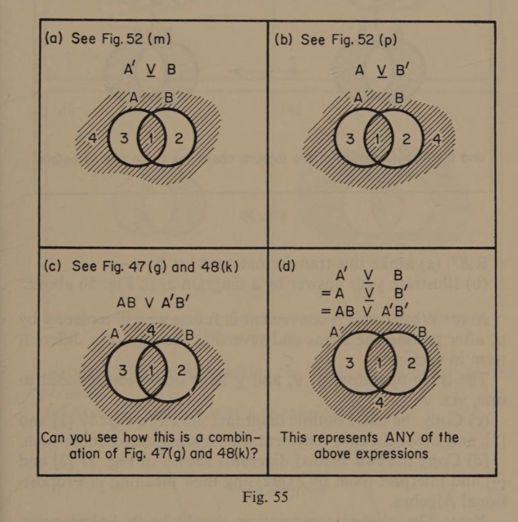
What has happened? We have got rid of ⊻ and replaced it by ∨, and the two conditions have been separated in pairs, but in each pair the sign of one of them has been reversed. Let us consider a verbal example to make it quite clear. In R.84 (m) the company agreed to pay a lump sum of ten thousand dollars or twenty dollars per week, but not both, which we translated as A ⊻ B. Another interpretation is, they would pay ten thousand dollars and not twenty dollars per week, or twenty dollars perpage 84 week, and not ten thousand dollars. Thus, we can write AB′ ∨ A′B.
R.86. Transform A ⊻ B into an expression linked by ∨. Study this diagram.
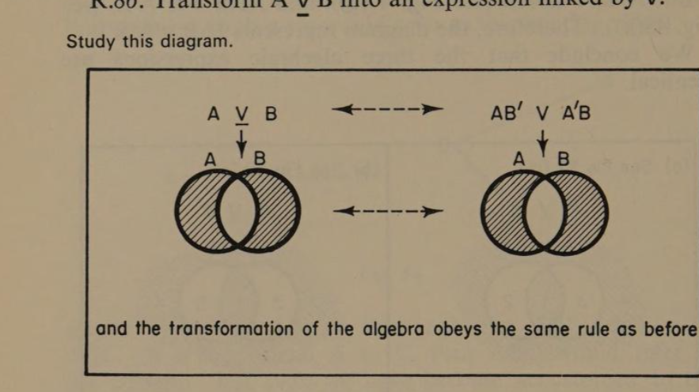
R.87. (a) Make this transformation A′ ⊻ B′ ↔ ……
(b) Illustrate your answer by a diagram as in Fig. 56 above.
Note: Whenever it is convenient in future we will replace ⊻ by ∨, after pairing the terms and reversing the sign of a different term in each pair. The three operators ∧, ∨, and ⊻ have now been reduced to one, viz. ∨.
(c) Copy the basic outline diagrams shown in Fig. 57 [1] and [2], and shade them to represent the Algebra stated under each.
(d) Copy the two shaded diagrams shown in Fig. 57 [3] and [4] and interpret them by expressing their meaning in Propositional Algebra.
Note: The algebraic expression should be in linked pairs, using only ∨ as the operator.
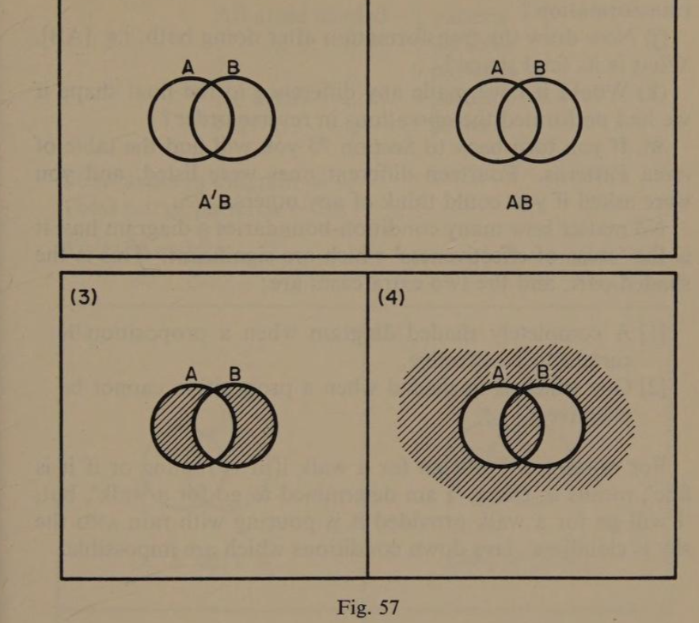
(e) Express this statement in Propositional Algebra using only the operator ∨: ‘The first prize will be a bicycle or a gold watch.’
(f) Mary’s two brothers were always quarrelling. They were all invited to a party, and her mother said Mary could not go alone. Mary said she would go only if one of her brothers did not.page 85 Express Mary’s proposition in Algebra, using ∨ as the operator.
(g) Study this diagram of a parallelogram.
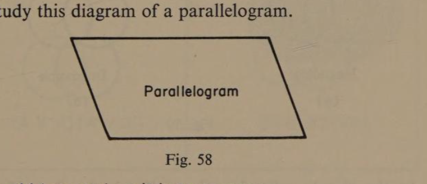
We could ‘operate’ on it in two ways: (A) Make its sides equal. (B) Make its angles equal. Thus, A ∨ B would mean doing one operation without the other. Express this, using only the symbol ∨ as operator.
(h) Draw the transformation after performing one of these, say [AB′]. What shape is it?page 86
(i) Now draw the transformation of the parallelogram after performing only the other, that is, [A′B]. What shape is the transformation?
(j) Now draw the transformation after doing both, i.e. [AB]. What is its final shape?
(k) Would it have made any difference to the final shape if we had performed the operations in reverse order?
88. If you turn back to Section 73 you will find the table of Area Patterns. Fourteen different ones were listed, and you were asked if you could think of any others. No matter how many condition-boundaries a diagram has, it is the ‘areas of effectiveness’ which are significant. This is the shaded part, and the two extra cases are:
- A completely shaded diagram when a proposition is certain to be effective.
- One which is unshaded when a proposition cannot be effective.
For example: ‘I will go for a walk if it is raining or if it is fine’, means in effect, ‘I am determined to go for a walk’; but, ‘I will go for a walk provided it is pouring with rain and the sky is cloudless’, lays down conditions which are impossible.
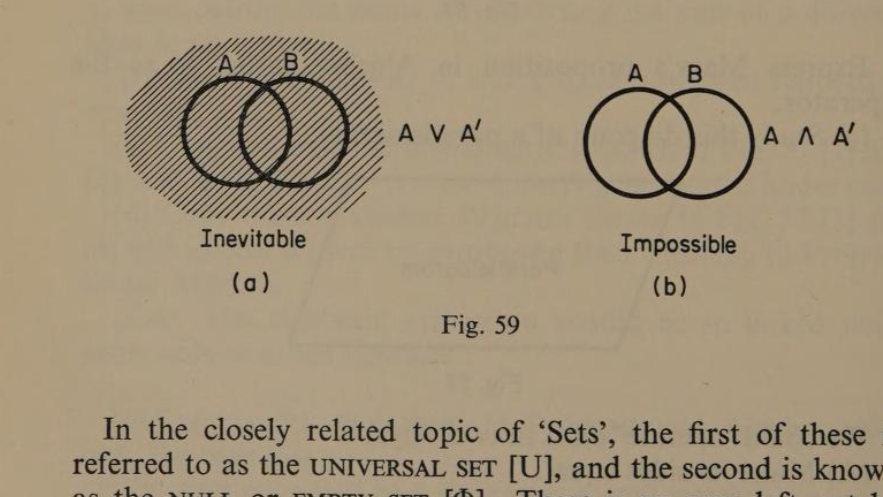
In the closely related topic of ‘Sets’, the first of these is referred to as the universal set [U], and the second is known as the null or empty set [∅]. There is an area left out by [A ∨ A′], nor any area identified by [A ∧ A′]. When we are dealing with conditions which are mutually contradictory they are bound to be effective if linked by ∨, but when linked by ∧ they cannot be effective.
page 87 Adding these to the list in Section 73 we now have:
| All areas shaded | 1 pattern |
| 3 areas shaded | 4 patterns |
| 2 areas shaded | 6 patterns |
| 1 area shaded | 4 patterns |
| No areas shaded | 1 pattern |
Total areas in diagram = 4. Total no. of patterns = 16. Note: 2⁴ = 16.
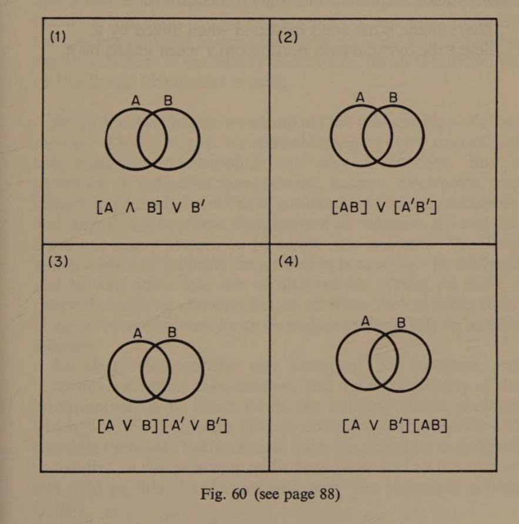
R.88. (a) What is the symbol for the Null Set?
(b) Draw and shade the diagram which represents U.
(c) Write the symbol for this set … B′B.
(d) Does B ∨ B′ signify an Inevitable or Impossible proposition?page 88
(e) Two sets in conjunction is that part of them which coincides; or in a diagram, the overlapping area. In that case complete this statement:
A ∧ [B ∨ B′] ↔ ……
(f) Complete this statement of equivalence:
[A ∨ B] ∨ B ↔ ……
(g) Complete this in the same way:
[A ∨ B] ∧ B ↔ ……
(h) Copy the four basic diagrams in Fig. 60 on page 87, and shade each to represent the Algebra beneath it.
Hint: Shade both areas indicated when linked by ∨. Select the overlapping portion only when linked by ∧.